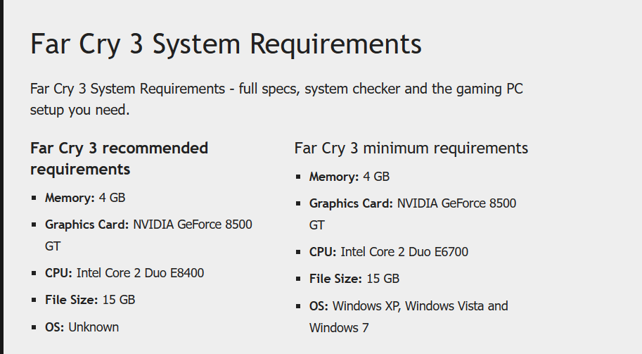
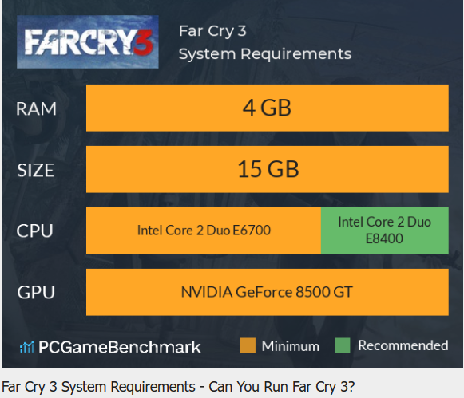

Minimun Requirements
Can you run it? Test your computer against Far Cry 3 system requirements.
When it comes to the Far Cry 3 system requirements, the minimum memory requirement for Far Cry 3 is 4 GB of RAM installed in your computer. Provided that you have at least an NVIDIA GeForce 8500 GT graphics card you can play the game. You will need at least 15 GB of free disk space to install Far Cry 3. An Intel Core 2 Duo E6700 CPU is required at a minimum to run Far Cry 3. However, the developers recommend a CPU greater or equal to an Intel Core 2 Duo E8400 to play the game.
Far Cry 3 first shipped in November 2012, so does not have a high demand for a good system, expanding its target audience of players. However, if you have a system greater than the recommended one, and want to improve the quality of your gameplay, it can be done so in game. Once in game, hit [Esc], then navigate to “VIDEO QUALITY” under the “OPTIONS” tab. Here, you can alter the “Overall Quality” to “Low” “Medium” “High” “Optimal” and “Custom”. These categorise the appearance of the game into four available choices, limiting the increase in specific graphics settings.
If you desire an increase/decrease in the subcategories, select the “Custom” option, which enables you to change the textures, ambient lighting, shadow, post FX, geometry, vegetation, terrain, water and environment to either “Low”, “Medium”, “High” or “Very High”. Increasing these graphics will improve the quality of your gameplay, but could have negative repercussions on your framerate.
To improve your Far Cry 3 FPS, navigate to the VIDEO tab in the OPTIONS, and switch your DirectX version to “DirectX 9”. This change is suitable for players running the game on higher graphics, for it is a better fit version for this demand.
A second solution to increase your ingame FPS is to disable Vsync. This is another option under the VIDEO tab, which can be displayed as “on” or “off”. Select this to off to increase your framerate. Vsync is a display option that allows the frame rate of Far Cry 3 to synchronize the frame rate with the refresh rate of the monitor for better stability. For example, using Vsync with a 60Hz monitor will cap the frame rate at 60 fps. Turning off Vsync will obtain a higher frame rate, but could introduce negative, unintended consequences onto the game.
[Created By Senuda] [Contact Number +94750125982] [whatsapp number +94750125982]